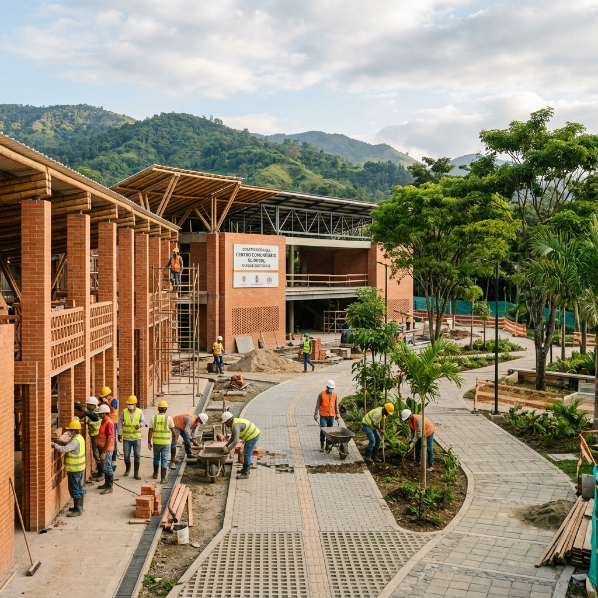
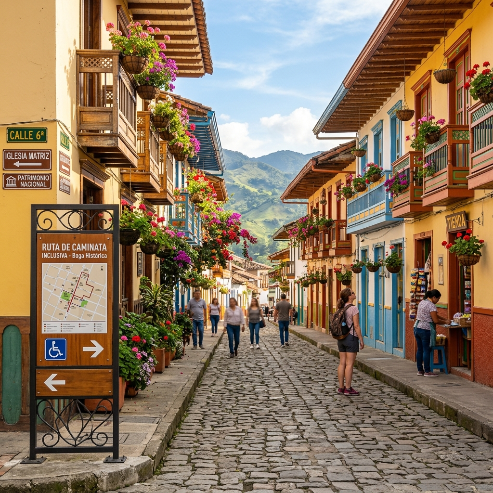
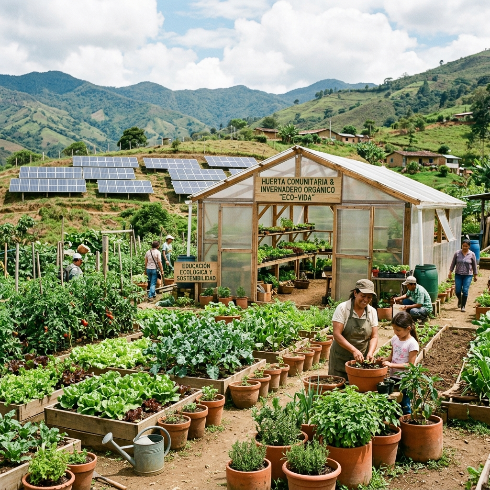

Evidencias de impacto real y gestión técnica eficiente en el territorio.

ConstrucciónDiseño y desarrollo de un centro multipropósito en Cartago, Valle. Utiliza mampostería tradicional en terracota y cuenta con accesibilidad física universal completa (rampas, texturas podotáctiles).

TurismoDiseño, señalética interpretativa y capacitación comunitaria para una ruta turística de bajo impacto ambiental y alto rescate histórico en Cartago, activando la economía artesanal popular.
Talleres formales e interactivos de Lengua de Señas Colombiana (LSC) y accesibilidad lingüística en instituciones públicas y guías turísticos locales para la inclusión real de la población sorda.

SostenibilidadImplementación de huertas orgánicas e infraestructura técnica descentralizada para la captación de agua pluvial y riego solar en la zona rural de Cartago, reduciendo la vulnerabilidad alimentaria.